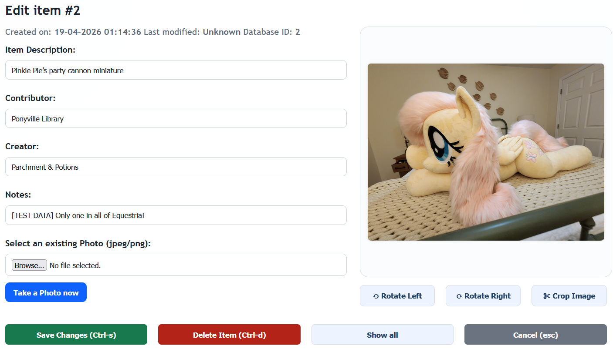
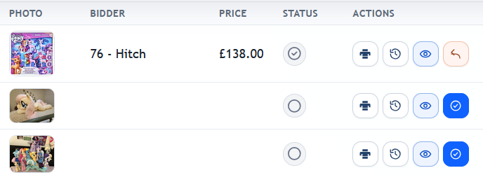
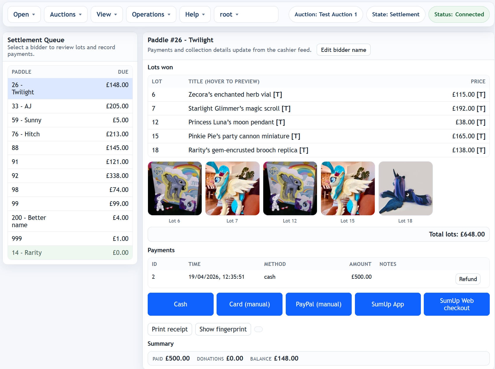
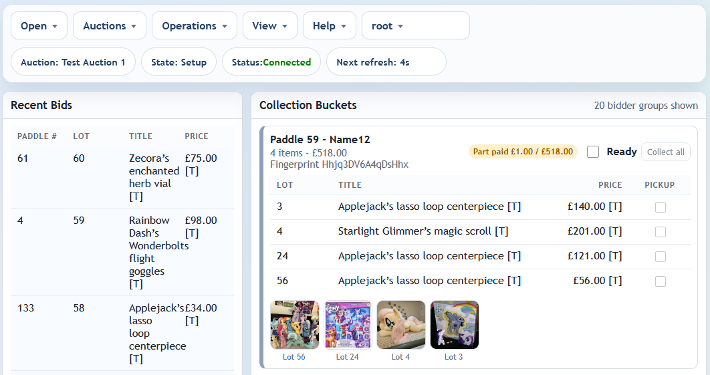
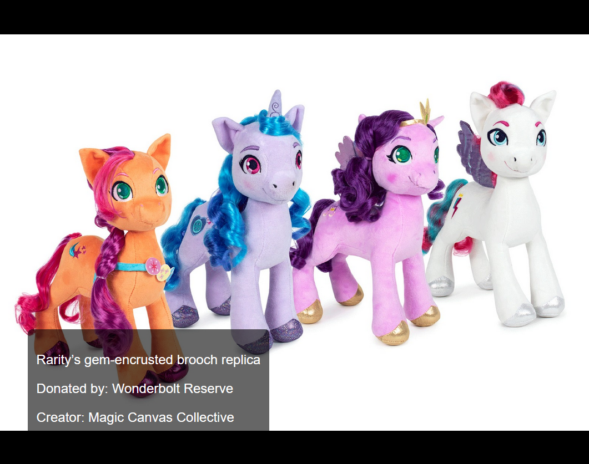
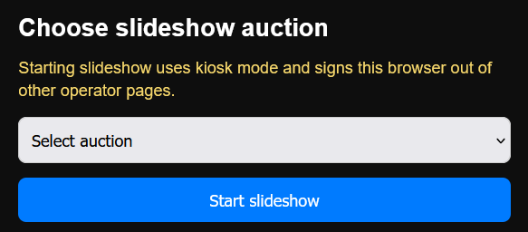
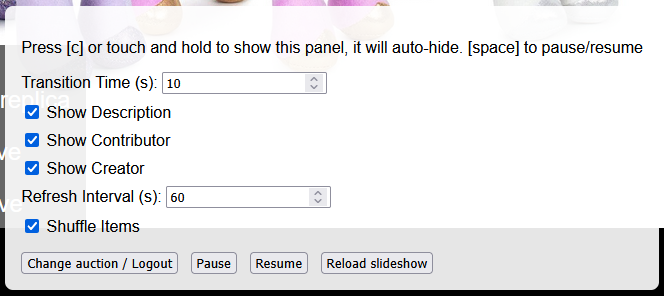
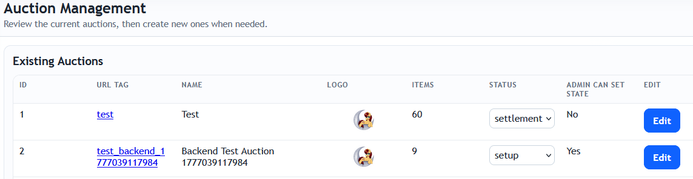
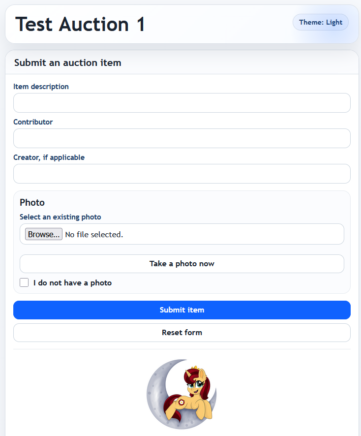

Jump to section
Admin Panel
Overview
The Admin interface provides tools for managing auction items: submitting, editing, organizing, recording bids, and exporting data for presentation and reporting.

Functional Areas
Auction Tools
- Auction Selector: Choose which auction you're working in. The current state is also shown.
- State Changer: If enabled in Maintenance, admins can change the auction state from the dropdown.
- Sorting Options: Sort the item list by item number, description, contributor, creator, bidder, or price, in ascending or descending order.
- Item counts and Value: Shows total raised plus a count of items with recorded bids.
Item Management
The controls available will depend on the auction state (and for moves, the state of the target auction). Items with recorded bids cannot be edited or moved
- Create New Item: Opens the item form to enter a new submission with optional photo and notes.
- Edit: Opens the edit form to modify the selected item.
- Print Slip: Generates a single-item PDF for local printing (receipt or label, depending on configuration).
- Print confirmation: After the print dialogue closes, a confirmation asks whether printing succeeded. The print tracking icon is only updated when confirmed.
- Photo Tools: Rotate, crop, or replace an image.
- Delete: Remove the item and its photos permanently.
- Move within auction: Move the item within the auction. It will be placed after the selected item.
- Move to auction: Move the item to a different auction. The item will be placed at the end of the target auction
- History: Displays a detailed log of changes for a specific item, including timestamp, user, and action type.
Print icon status colours: grey = never printed, green = printed and up to date, yellow = item text changed after last print (slip may be out of date).
Bid controls
These are shown when the auction is in live or settlement modes. Editing is disabled.
- Record Bid: Capture paddle number and hammer price for an item (available in live/settlement). Focus shifts automatically to the next un-finalised item.
- Undo bid: Retract a recorded bid. Note that a bid cannot be retracted if payments have been made and it would cause the bidder to be owed money. In this situation, create a refund first.
Export Options
- Generate CSV Export: Download all items in spreadsheet format.
- Generate Auction Slides: Create a PowerPoint deck with one slide per item, styled according to the current template configuration.
- Generate Item Cards: Produces A6-sized slides/cards for printing and on-site use.
- Print All Item Slips (PDF): Generates a multi-page slip PDF containing all items in the selected auction.
- Print Unprinted/Out-of-date Slips (PDF): Generates a multi-page slip PDF for items that are unprinted or stale (changed after the last confirmed print).
- Reset Slip Print Tracking: Clears slip print tracking for all items in the selected auction (requires confirmation).
Other Pages
- Public Form: Opens the public-facing item submission page.
- Live Feed: Opens the auction live bid display.
- Maintenance: Opens the maintenance panel (separate login required).
- Cashier: Opens the cashier interface (separate login required).
- Slideshow: Opens the presentation slideshow mode

User Controls
- User: Displays the current username
- Change password: Allows user to change password.
- Log out: End the session and returns you to the login screen.
Item Slip Printing
Overview
Item slips are text-only PDFs used to tag donated items quickly. Layout is controlled by slipConfig.json in Maintenance and supports both 80mm receipt printers and 6x4 label printers.
- Single item: Use the print icon in the item row.
- Batch: Use Admin > Export > Print All Item Slips (PDF) or Print Unprinted/Out-of-date Slips (PDF).
- Tracking:
last_printis only updated after operator confirmation that printing succeeded. - Reset tracking: Use Admin > Export > Reset Slip Print Tracking (confirmation required).
Operator Workflow
- Start print (single item or batch).
- Print dialog opens for local printer output.
- Complete or cancel printing in the browser dialog.
- When prompted, confirm whether print succeeded.
- If confirmed, print status is updated and icon colour refreshes automatically.
Icon colours: grey = never confirmed as printed, green = confirmed and current, yellow = item text changed since last confirmed print.
Printer Setup (Recommended)
80mm Receipt Printer (for example MUNBYN ITPP047)
- Paper size: Match driver and slip config. Typical receipt setup is 80mm width with your configured page length.
- Orientation: Use the same orientation as
slipConfig.json(portraitorlandscape). - Scale: 100% (or “Actual size”). Avoid “Fit to page” if it changes text placement.
- Margins: None or minimum available.
- Duplex: Off.
- Cutter: Enable auto-cut and set cut mode to cut after each page/job so each slip is separated.
- Paper feed: Ensure top-of-form/start position is calibrated to avoid vertical drift between slips.
6x4 Label Printer
- Media size: 4in x 6in (101.6 x 152.4mm) in both printer driver and slip config.
- Orientation: Match slip config orientation.
- Scale: 100% (Actual size).
- Margins / offset: Use zero/minimal margins and calibrate label origin if content is shifted.
- Cut/tear: If cutter is fitted, set to one cut per page; otherwise use tear-after-each-label mode.
Troubleshooting
- Layout does not align: Check printer media size and browser scaling first, then adjust field coordinates in
slipConfig.json. - No separator/cut between slips: Enable cutter and set cut-after-each-page in printer preferences/driver utility.
- Print status updated by mistake: Use Reset Slip Print Tracking from the Export menu.
- Wrong items in batch: Use Print Unprinted/Out-of-date Slips for operational reprints only.
Cashier Panel
Overview
This interface supports closing out payments after the auction. It shows what each bidder owes, tracks payments, and supports refunds.
Select an auction from the dropdown and then choose Live View or Manage Payments.
Manage Payments
Bidder List (Left Panel)
- Lists all bidders who have won items.
- Each row shows the paddle number and total amount due.
- Click a row to view details and process payments.
- Green highlight indicates a bidder is fully settled.
- Payment Summary: Opens a quick breakdown of totals by payment method.
- Download CSV: Exports bidder payment status summary.
Bidder Details (Right Panel)
- Lots Won: Displays all winning bids and their prices. Hover a lot title to preview the photo (if present).
- Payments: Shows recorded payment transactions. Use Refund to reverse a payment. Reason must be provided.
- Totals: Calculates outstanding balance in real time.

Payment Buttons
- Options (as enabled by the server operator): Cash, Card (manual), PayPal (manual), SumUp (card reader), SumUp (web)
- Clicking a button opens a popup to enter amount and optional note.
- Buttons are shown only for enabled payment methods.
- All payments are timestamped and listed immediately.
- SumUp payments will open either the web checkout or SumUp app
User Controls
- User: Displays the current username
- Change password: Allows user to change password.
- Log out: End the session and returns you to the login screen.
Live Feed
The Live Feed interface displays a real-time view of auction activity. It shows bidding outcomes as they are finalised. The intention is that this assists with the grouping of items by bidder before the end of the auction.
Features
- Lot Data: For each sold item, the paddle number, lot number, item title, and hammer price are shown.
- Connection Status: An indicator displays whether the feed is actively receiving updates (green) or stale (orange).
- Filter by Paddle: Enter a paddle number and press Go to view only that bidder’s wins.
- Show Unsold: Toggle whether items with no recorded bid are shown in the list.
- Live Updates: The page listens for changes without needing manual refreshes.
- Hover a lot title to preview the photo (if present)
Slideshow
Overview
This slideshow is designed for unattended display during the live auction. It cycles through item images with optional text overlays and supports remote updates from the admin panel.
Getting Started
- On first load, you'll be prompted to enter the auction short name and slideshow user password.
- Once validated, the system enters full-screen slideshow mode and logs out any existing elevated user sessions for security.
Controls & Shortcuts
- [c] – Toggle configuration panel
- [space] – Pause or resume the slideshow
- [Esc] – Pause slideshow
- Tap-and-hold or click-and-hold – Show configuration panel on touch screens
Configuration Panel
This overlay appears when triggered by keyboard or touch. It auto-hides after 10 seconds of inactivity.
- Transition Time: Duration each slide is shown (in seconds)
- Show Description: Toggle display of item description
- Show Contributor: Toggle display of the item's donor
- Show Creator: Toggle display of the artist/creator
- Refresh Interval: How often to check for new items (in seconds)
- Shuffle Items: Enable randomized item order
- Change Auction / Logout: Reset slideshow and prompt for new auction details
- Pause / Resume / Reload: Playback controls
Maintenance Panel
Overview
This interface provides access to tools for managing auctions, data management, configuring export templates, payments, and other tasks.
Functional Areas
Auction Management
- Create New Auction: Define a full display name and a short URL tag (e.g.
?auction=fof2026). - Select Logo: Choose a logo from the uploaded image set for branding & PowerPoint slides.
- Existing Auctions Table: Lists all auctions, showing ID, name, tag, logo, item count, and status.
- Set auction state
- Allow admin to change auction state. If enabled, a state dropdown is provided on the admin interface
- Reset - Remove all items from the auction. Only available in state "setup" or "archived"
- Delete - Only if empty. Deleting the last auction will clear and reset all counters in the database.
- Audit history cannot be cleared from the web interface. Use the server-management.js console tool
Database
- Create Backup on Server: Makes a snapshot of the current database to a folder on the server.
- Restore Database: Upload a previously saved database file.
- Download Database File: Download the current database file.
- Download Database + Photos: Export a zipped archive of the database and all photos.
Import/Export
- Export CSV: Exports all items in CSV format.
- Import CSV: Bulk import items using a CSV. Required column headers:
description,artist,contributor,notes, andauction_id. - Download Database and Photos: Exports a zipped copy of the database and all photos.
Diagnostics
- Photo Storage Report: Shows number and total size of stored images.
- Check for Invalid Items: Identifies broken item entries (e.g. missing auctions or photos).
- Clean Up Unused Photos: Finds and deletes orphaned photo files.
- Restart Server: Sends a soft restart command to the backend process. Requires that the service name matches the SERVICE_NAME parameter in config.json. Note that this is unlikely to work where the backend is running as a service due to Linux security policy
Security
- User Management: Create and delete named users, assign any combination of
admin,cashier,maintenance, andslideshowroles, and set per-user passwords. - Own Password: Logged-in users can change their own password from their own panel.
- Root Account: A default
rootuser is created on first run with full permissions and cannot be deleted. - If access is lost, passwords can be reset using the
server-management.jsconsole tool on the server.
Generate Test Data
- Generate Items: Add a number of mock items to a selected auction for testing purposes.
- Generate Test Bids: Simulate activity by generating test bids and bidders.
- Delete Test Bids: Clears all test bidding data.
Generator Config Editor
- Edit Config: Select between
Slide Config,Card Config, orItem Slip Config. - Item Slip Config: Controls PDF slip page size/orientation and text layout for the admin Print Slip action.
- Reset to Default: Revert selected config to factory settings.
slipConfig.json schema editing

Image Manager
- Upload Images: Upload assets (e.g. logos or backgrounds) for use in PowerPoint and/or auction logos.
- Delete: Remove previously uploaded image resources.
Payment Processing
- Payment Methods: View enabled/disabled payment methods and labels used by the cashier interface.
- Callback URL: Click to test connectivity to the payment callback endpoint.
Audit Log Viewer
- Fetch Audit Log: Loads audit history showing time, user, action, item details, and auction.
- Filter by ID: Narrow the log view to actions affecting a specific object. This is a database internal ID.
- Filter by Event Type: Limit results to item, bidder, payment, auction, or database events.
- Download CSV: Export log data for offline review or archiving.
Server Logs
- View Logs: Show recent backend server output.
- Auto-Refresh: Enable live updates every 5 seconds.

Public Entry
Overview
This page is used for public (non-authenticated) adding of items. The auction can be selected automatically by appending the auction shortname to the URL e.g. "?auction=test001". This allows easy use on QR codes.
- If no auction is supplied, the user will be prompted to enter the auction short name
- Item description and contributor are required as a minimum. Submission without a photo is allowed, but the "I don't have a photo" box must be clicked
- Controls to both upload an existing photo and take one directly are provided
Function / state quick reference
| Function | User | Setup | Locked | Live | Settlement | Archived |
|---|---|---|---|---|---|---|
| Submit item (public) | ✅ | ❌ | ❌ | ❌ | ❌ | |
| Add new item | A | ✅ | ✅ | ❌ | ❌ | ❌ |
| Edit item | A | ✅ | ✅ | ❌ | ❌ | ❌ |
| Move (within auction) | A | ✅ | ✅ | ❌ | ❌ | ❌ |
| Move (to auction) | A | 🟡 target “setup” or “locked” | 🟡 target “setup” or “locked” | ❌ | ❌ | ❌ |
| Rotate photo | A | ✅ | ✅ | ❌ | ❌ | ❌ |
| Crop photo | A | ✅ | ✅ | ❌ | ❌ | ❌ |
| Delete item | A | ✅ | ✅ | ❌ | ❌ | ❌ |
| Print item slip | A | ✅ | ✅ | ✅ | ✅ | ✅ |
| Record bid | A | ❌ | ❌ | ✅ | ✅ | ❌ |
| Undo bid | A | ❌ | ❌ | ✅ | 🟡 See text | ❌ |
| View payments | C | ✅ | ✅ | ✅ | ✅ | ✅ |
| Take payments | C | ❌ | ❌ | ❌ | ✅ | ❌ |
| Undo payments | C | ❌ | ❌ | ❌ | ✅ | ❌ |
| Run slideshow | A | ✅ | ✅ | ✅ | ✅ | ✅ |
| Show live bidding view | A,C | ✅ | ✅ | ✅ | ✅ | ✅ |
| Add test items | M | ✅ | ✅ | ❌ | ❌ | ❌ |
| Add test bids | M | ❌ | ❌ | ✅ | ❌ | ❌ |
| Reset auction | M | ✅ | ❌ | ❌ | ❌ | ✅ |
| Delete auction | M | 🟡 When no items | ❌ | ❌ | ❌ | 🟡 When no items |